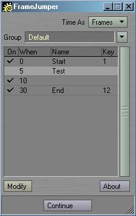
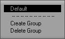
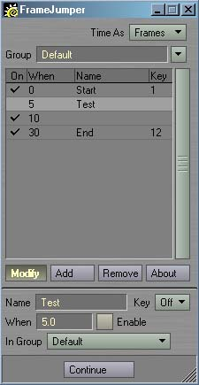

|
To install Frame Jumper, just follow these steps:
Frame Jumper
Frame Jumper is a Master plug-in for marking and jumping to frames. The Generic plug-ins Jump To Next Marker and Jump To Previous Marker, allow you to step through the markers from Layout, as well as creating and deleting markers via Mark Frame and Unmark Frame, and change groups with JumpToNextMarkerGroup and JumpToPreviousMarkerGroup. Markers in a group can be bound to keys or buttons in Layout using the Mark Frame As and Jump To Marker generic plug-ins. Frame Jumper allows you to mark any number of frames, creating "markers". You can have any number of markers. Markers are stored in groups, of which you can have as many as you like. Markers and groups can be named, and markers can be disabled and set to a particular time or bound to a key. All markers in the current group are presented in the Frame Jumper interface, which can be used to browse the markers, change groups or modify markers. You can also use the previously mentioned generic plug-ins to cycle through and modify markers and groups directly from Layout. There are two ways to activate Frame Jumper. The simplest way is to activate any of the above plug-ins, or the Frame Jumper Properties Generic. These automatically add the Frame Jumper Master plug-in. The other option is to manually add the Frame Jumper Master from Layout's Plug-in Options panel; just select it from the Master pop-up. Frame Jumper's interface can be opened by double-clicking on the activated Master plug-in from the Plug-in Options Panel, or by activating the Frame Jumper Properties generic. This opens a non-modal panel, meaning you can leave it open while you work in Layout. You can resize the interface vertically by dragging the lower-right corner of the panel, where the diagonal lines are drawn. Below is an example of the interface.  At the top of the interface is the the Units pop-up. This determines if the times are displayed and entered in Seconds or Frames. The About button at the bottom right will pop up information about Frame Jumper and it's related plug-ins, as well as the keyboard equivilants for the interface. The most important part of the interface is the lister. This dislpays all marked frames, and is sorted by time. Double-clicking a particular marker will jump to that time in Layout. The first column of the list shows if the marker is currently enabled. Disabled markers are skipped by the Jump To Next Marker and Jump To Previous Marker Generic plug-ins. You can click in this column to enable or disable a marker. The second column marks the frame that the marker points to. The third column displays the name of the marker. The final column displays the key that the marker is bound to, with nothing displayed for an unbound marker. The key corresponds to one of the twelve  Just above the lister is the Group pop-up. This allows you to select the currently active group. The lister will show only the markers in that group. You can use theedit field to change the group name at any time. By clicking on the pop-up to the right of the field, you can change groups to any above the divider. The Create Group entry allows you to create a new, empty group. Delete Group clears the current group and all of it's markers. If no more groups exist, a new, empty group will be created. The Modify button toggles between the default browser mode and the advanced edit mode. When enabled, new controls will be made visible at the bottom of the interface, as seen in the example below.  The Add button will add a new marker to the list at the current Layout time to the current group. You can have any number of markers in each group. Remove will remove the currently selected marker from the list. The Name field allows you to change the name of the currently selected marker. This can be anything you like; it is just a label for your reference. When is the time that this marker points to. This will be in seconds or frames, depending on the state of the Units pop-up. Enable toggles the active state of the marker. Disabled markers will be skipped by the Jump To Next Marker and Jump To Previous Marker generics. The Key pop-up allows you to bind a marker to one of the Jump To Marker generic plug-ins. Setting this to Off unbinds the marker. Setting it to any other value binds the current marker to that key, and unbinds any other marker in the same group that may have been using that key. The In Group pop-up allows you to change the group that the currently selected marker belongs to. The marker will immediatly jump to the new group and be removed from the current group's list. If a marker in the new group has is bound to the same key as this marker, the existing marker will be reset to Off and the new marker will take precedence. Loading, Saving and Load From Scene
FrameJumper only allows one instance of itself to be in the scene at a time. It will automatically detect multiples of itself and remove it (although it might have to wait until the next event occurs first). All instances share the same data, and nothing is cleared from memory until all instances have been removed. If for some reason multiple instances exist and you save the scene, only the first instance will save data, so you don't have to worry about the data being saved twice or other wacky effects. This will only happen if you add the Master plug-in and immediatly save the scene, so it should be fairly rare. On scene load, only the first instance's data will load, and the rest will be considered as duplicates and be ignored.
In the case of Load From Scene, however the first instance in the scene will be loaded, and it's groups will be added to the data already loaded into the scene. This ensures that the new groups are loaded without change, while the original groups remain intact. As with loading, all other instances in the scene will be skipped. Keyboard Equivilants
Frame Jumper Properties
Frame Jumper Properties provides a quick method to get to the Frame Jumper Master plug-in. If the Master has already been activated, this will simply open it's interface. If the Master isn't currently active, this will first add it and then open the interface. Jump To Next Marker
|